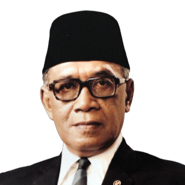

BAB XIII
Beberapa Tokoh Indonesia pada Awal Masa Kemerdekaan sampai Reformasi
Tokoh Nasional pada Awal Kemerdekaan
- Soekarno (1901-1970)
- Panggilan akrabnya adalah Bung Karno.
- Lahir di Blitar pada 6 Juni 1901 kepada Raden Soekemi Sosrodiharjo dan Ida Ayu Nyoman Rai, meskipun masa kecilnya lebih banyak di Surabaya untuk menempuh pendidikan yang memadai.
- Ia pernah menempuh pendidikan dasar di EIS dan ELS, sekolah setara SMP di HBS, dan perguruan tinggi di dan THS (sekarang dikenal ITB).
- Soekarno mendirikan PNI (Partai Nasional Indonesia) pada 1927. PNI dianggap membahayakan praktek kolonialisme, sehingga Soekarno dan beberapa tokoh lain ditangkap pada 1930.
- Soekarno diadili 4 tahun penjara, tetapi dibebaskan pada 1931 karena pledoinya Indonesia Menggugat. Ia bergabung dengan Partindo (Partai Indonesia) kemudian ditangkap lagi pada 1933 dan dibuang ke Flores lalu dipindahkan ke Bengkulu. Beliau bebas lagi pada tahun 1942.
- Pada masa pendudukan Jepang, Soekarno memimpin Putera (Pusat Tenaga Rakyat) bersama Bung Hatta, Ki Hajar Dewantara, dan KH Mas Mansyur. Ia juga menjadi ketua Cuo Sangi In (Dewan Penasihat Pusat).
- Soekarno bersama Moh. Hatta memproklamasikan Kemerdekaan Indonesia pada 17 Agustus 1945, melahirkan sebutan Bapak Proklamator bagi Soekarno. Keesokan harinya, ia diangkat menjadi Presiden RI.
- Kesehatan Presiden Soekarno mulai menurun sejak Agustus 1965. Akhirnya, ia wafat pada 21 Juni 1970 dan dimakamkan di Blitar.
- Moh. Hatta (1902-1980)
- Moh. Hatta bersama Soekarno sering disandingkan sebagai “Dwitunggal” di awal kemerdekaan Indonesia.
- Lahir di Bukit Tinggi pada 12 Agustus 1902 kepada keluarga ulama.
- Ia bersekolah di Fort de Kock, melanjutkan ke ELS, MULO, kemudian ke Prins Hendrik School di Jakarta dan Handels Hooge School di Belanda. Pada 1916, Bung Hatta menjadi anggota perkumpulan Jong Sumatra.
- Hatta dipercaya menjadi ketua Perhimpunan Indonesia di Belanda pada tahun 1924. Namun, gerakan itu dianggap berbahaya, maka Hatta dan kawanannya ditangkap pada 1927 dan diadili pada 1928, tapi kemudian dibebaskan dari segala tuntutan.
- Pada tahun 1932, Hatta kembali ke Indonesia dan memimpin partai Pendidikan Nasional Indonesia, namun karena kegiatan politiknya ditangkap Belanda dan diasingkan ke Papua pada tahun 1935. Ia dipindahkan ke Banda Neira tahun 1937.
- Di masa pendudukan Jepang, Hatta memimpin kantor Putera (Pusat Tenaga Rakyat) bersama Soekarno, Ki Hajar Dewantara, dan KH Mas Mansyur. Ia juga pernah berkiprah dalam panitia bentukan BPUPKI dan mempersiapkan konsep dasar negara Indonesia.
- Moh. Hatta memproklamasikan kemerdekaan Indonesia bersama Soekarno pada tanggal 17 Agustus 1945. Keesokan harinya, ia diangkat menjadi wakil presiden RI yang pertama. Ia memimpin delegasi Indonesia dalam KMB di Den Haag pada 1949.
- Ia mengundurkan diri sebagai wakil presiden RI pada tahun 1956. Bung Hatta wafat pada 14 Maret 1980 dan dimakamkan di TPU Tanah Kusir Jakarta. Tahun 1986, ia ditetapkan sebagai pahlawan proklamator.
- Muhammad Yamin (1903-1962)
- Terkenal sebagai sastrawan, sejarawan, budayawan, politikus, dan ahli hukum.
- Lahir pada 24 Agustus 1903 di Talawi, Sawahlunto, Sumatra Barat.
- Ia bersekolah di HIS Palembang dan melanjutkan ke AMS di Yogyakarta, di mana ia mempelajari sejarah purbakala dan bahasa kuno. Ia menjalani kuliah di Rechtskundige Hooge School dan memperoleh gelar Meester in de Rechten pada tahun 1932.
- Yamin aktif dalam berorganisasi dan berpolitik, dimulai dari Jong Sumatra, dan ikut menyusun kalimat ikrar Sumpah Pemuda yang diikrarkan pada 28 Oktober 1928.
- Ia terpilih menjadi anggota BPUPKI dan banyak berperan dalam sidangnya, sering berpendapat dan memberikan usul. Setelah kemerdekaan, ia diangkat sebagai anggota KNIP.
- Jabatan yang pernah dipegangnya adalah: anggota DPR (sejak 1950), Menteri Kehakiman (1951-1952), Menteri Pengajaran, Pendidikan, dan Kebudayaan (1953-1955), Menteri Urusan Sosial dan Budaya (1959-1960), Ketua Dewan Perancang Nasional (1962), Ketua Dewan Pengawas IKBN Antara (1961-1962), dan Menteri Penerangan (1962-1963).
- Yamin menulis cukup banyak buku, termasuk Peta Sejarah yang diterbitkan tahun 1956. Ia juga mendapatkan beberapa penghargaan dari negara, termasuk Bintang Mahaputra RI.
Ia wafat pada 17 Oktober 1962 dan dimakamkan di Talawi.
- Sultan Hamengkubuwono IX (1912-1988)

- Salah satu sultan dari Kesultanan Yogyakarta. Dikenal memiliki jiwa kerakyatan.
- Lahir pada 12 April 1912 dari Sri Sultan Hamengkubuwono VIII dan Raden Ajeng Koestilah.
- Ia bersekolah di ELS di Yogyakarta, kemudian di MULO Semarang, AMS Bandung, dan sekitar 1930-an masuk kuliah di Rijksuniversiteit Leiden (sekarang Universitas Leiden) di Belanda. Sebelum menamatkan kesarjanaannya, ia kembali ke Indonesia dan dinobatkan sebagai sultan pada 18 Maret 1940.
- Menentang penjajahan Belanda dan mendorong kemerdekaan Indonesia. Ia secara spontan menyatakan Yogyakarta bergabung dengan RI pada 5 September 1945 dan menyumbangkan sekitar 6 juta gulden saat perekonomian buruk.
- 19 September 1948. Belanda melakukan agresi militer kepada Yogyakarta dan menawan pemimpin RI. Yogyakarta bisa dibebaskan karena Serangan Umum 1 Maret 1949 yang digagas Hamengkubuwono IX.
- Hamengkubuwono IX juga menduduki banyak jabatan lainnya: Gubernur/Kepala Daerah Istimewa Yogyakarta (1945-1988), Menteri pertahanan dan Koordinator Keamanan Dalam Negeri (1949), Wakil Perdana Menteri (1950-1951), Menteri Pertahanan (1952-1953), Ketua Bapeka (1960-1962), Ketua BPK (1964-1966) Waperdam Bidang EKuin (1966), Menteri Utama Bidang Ekonomi dan Keuangan (1966-1967), Menteri Negara Ekuin (1967-1973), dan Wakil Presiden RI (1973-1978). Ia juga pernah menjabat Ketua Umum KONI Pusat, Ketua Dewan Pembimbing Pariwisata Nasional, dan Ketua Kwartir Nasional Gerakan Pramuka.
- Ia wafat pada 3 Oktober 1988 dan dimakamkan di pemakaman para sultan Mataram di Imogiri, Kabupaten Bantul, Yogyakarta.
- Panglima Besar Jenderal Soedirman (1916-1950)
- Lahir pada 24 Januari 1916 di Purbalingga, Jawa Tengah.
- Ia menempuh pendidikan di HIS Purwokerto, kemudian ke Taman Dewasa Taman Siswa, kemudian ke HIK, tapi tidak tamat. Ia mengajar di sekolah dasar Muhammadiyah di Cilacap, menjadi anggota Muhammadiyah yang aktif, dan memasuki organisasi pramuka Hizbul Wathan.
- Soedirman tetap mengajar pada masa pendudukan Jepang. Ia mengikuti pendidikan ketentaraan dalam PETA di Bogor dan diangkat menjadi komandan di Banyumas.
- Ia dan teman-temannya melakukan pemberontakan sehingga ditangkap dan diasingkan, tetapi Soedirman melarikan diri setelah proklamasi kemerdekaan dan pergi ke Jakarta untuk bertemu dengan Presiden Soekarno.
- 5 Oktober 1945, TKR terbentuk. Soedirman ditetapkan sebagai panglima besar pada 12 November 1945. Ia membina dan mengembangkan TKR sampai menjadi TNI.
- 12 Desember 1945, Soedirman dan anggota TKR berhasil menghalau pasukan Inggris dari Ambarawa setelah pertempuran tiga hari.
- 19 Desember 1948, Belanda melancarkan agresi militer kedua. Soedirman dan tentaranya bergerilya, dan Soedirman memimpin meskipun sakit berat. Sakitnya semakin parah, jadi ia pensiun dan pindah ke Magelang.
- Jenderal Soedirman wafat pada 29 Januari 1950 di Magelang dan dimakamkan di Taman Makam Pahlawan Semaki, Yogyakarta.
- Abdul Haris Nasution (1918-2000)
- Lahir pada 3 Desember 1918 di Kotanopan, Sumatera Utara.
- Bersekolah di HIS dan HIK Yogyakarta, AMS Jakarta, lalu menjadi guru di Bengkulu.
- Nasution tinggal di dekat rumah pengasingan Soekarno dan terkadang berbicara dengan Soekarno dan mendengarnya berpidato.
- Setelah pindah ke Tahun Raja setahun kemudian, ia berhenti mengajar dan masuk ke Akademi Militer di Bandung. Pendidikannya terhenti karena Jepang masuk Indonesia. tahun 1942.
- Setelah kemerdekaan, Nasution diangkat menjadi Komandan Divisi III TKR Bandung. Jabatannya menjadi Komandan Divisi I Siliwangi Bandung setelah reorganisasi TNI. Pada tahun 1948, ia memerintahkan Divisi Siliwangi hijrah ke Yogyakarta sebagai wujud pelaksanaan Persetujuan Renville.
- Abdul Haris Nasution diangkat sebagai Wakil Panglima Besar/Kepala Staf Operasi MBAP dan menjadi Panglima Komando Jawa hingga 1949. Saat Belanda mengakui kedaulatan Indonesia pada 27 Desember 1949, Nasution diangkat menjadi Kepala Staf AD (KSAD).
- Nasution mengusulkan rencana restrukturisasi dan reorganisasi militer, namun malah menimbulkan perpecahan. Presiden Soekarno mencabut jabatannya sebagai KSAD pada 17 Oktober 1952. 28 Oktober 1955, ia ditunjuk kembali menjadi KSAD.
- 30 September 1965, direncanakan ada penculikan oleh PKI. AH Nasution lolos, tetapi putrinya tertembak. Setelah peristiwa G 30 S/PKI, ia memperoleh jabatan ketua MPRS.
- Pada peringatan Hari ABRI 5 Oktober 1997, Nasution mendapat pangkat kehormatan jenderal besar bersama Soedirman.
- Jenderal Nasution wafat pada 6 September 2000 dan dimakamkan di Taman Makam Pahlawan Kalibata, Jakarta.
Tokoh pada Masa Pembangunan sampai Reformasi
- Soeharto (1921-2008)
- Jenderal Soeharto adalah Presiden RI yang menjabat paling lama, yaitu sekitar 30 tahun. Sebelum akhir era Orde Baru, ia mendapat predikat dari MPR sebagai Bapak Pembangunan Nasional
- Ia lahir pada tanggal 8 Juni 1921 di dusun terpencil Desa Kemusuk, di daerah Argomulyo, Godean, sebelah barat kota Yogyakarta. Ayahnya adalah seorang petani bernama Kartosudiro dan ibunya bernama Sukirah. Soeharto sudah masuk sekolah di usia 8 tahun, tetapi sering berpindah dan akhirnya menjalani SD di SD Pedes, Kemusuk Kidul.
- Soeharto melanjutkan pendidikan di SMP Muhammadiyah Yogyakarta, namun tidak memiliki dana untuk masuk SMA. Maka, ia melamar pekerjaan dan diterima di kampung halamannya sebagai klerek di Volk Bank.
- Soeharto memulai karir militernya di tahun 1940 saat ia diterima di sekolah militer Gombong, Jawa Tengah, dan sempat bergabung dengan KNIL (tentara Belanda) dan PETA (tentara Jepang). Pada 5 Oktober 1945, Soeharto menjadi anggota TKR.
- Pada tahun 1947, Soeharto menikah dengan Siti Hartinah atau Tien Soeharto dan menghasilkan enam anak: Siti Hardiyanti Hastuti, Sigit Harjojudanto, Bambang Trihatmodjo, Siti Hediati Herijadi, Hutomo Mandala Putra, dan Siti Hutami Endang Adiningsih.
- Soeharto memimpin perebutan Yogyakarta dari Belanda pada Serangan Umum 1 Maret 1949. Ia dipercaya menjadi pengawal Panglima Besar Jenderal Sudirman dan menjabat Panglima Mandala dalam kasus pembebasan Irian Barat.
- Selama masa pemberontakan G-30-S/PKI, Soeharto dan tokoh lain menumpas pemberontakan di tanggal 1 Oktober 1965. Soeharto juga menerima Supersemar, yang menjadi tonggak lahirnya pemerintahan Orde Baru. Soeharto diangkat ke jabatan presiden di Sidang Istimewa MPRS pada 12 Maret 1967 dan setahun kemudian menjadi presiden kedua RI.
- Soeharto menjabat sebagai presiden selama 30 tahun dan mengundurkan diri pada 21 Mei 1998.
- Setelah mengundurkan diri, Soeharto sering mengalami sakit, dan akhirnya meninggal dunia pada 27 Januari 2008 di Jakarta. Tubuhnya dimakamkan di Astana Giri Bangun, Solo, Senin.
- Adam Malik (1917-1984)
- Adam Malik dikenal sebagai birokrat, diplomat, dan wartawan di Indonesia. Ia lahir di Pematang Siantar, Sumatera Utara pada 22 Juli 1917. Ayahnya adalah pedagang kaya bernama Haji Abdul Malik Batubara dan ibunya Salamah Lubis.
- Ia bersekolah di HIS Pematangsiantar, kemudian melanjutkan di Sekolah Agama Madrasah Sumatera Thawalib Parabek di Bukittinggi, namun hanya selama satu setengah tahun. Ia kemudian membantu orangtuanya berdagang.
- Adam Malik merantau ke Jakarta dan, pada usia 20 tahun, bertemu dengan Soemanang, Sipahutar, Armijn Pane, Abdul Hakim, dan Pandu Kartawiguna. Mereka mendirikan Kantor Berita Antara pada 1937 dan menyediakan berita untuk surat kabar nasional. Adam Malik dipercaya memimpin Partindo Pematang Siantar dan Medan pada 1934-1935, dan menjadi anggota Dewan Pimpinan Gerindo di Jakarta pada 1940-1941.
- Adam Malik adalah salah seorang pemuda yang bergerilya di masa pendudukan Jepang, dan membawa Soekarno dan Hatta ke Rengasdengklok. Ia juga membantu menggerakkan rakyat untuk mendukung kemerdekaan di Lapangan Ikada, Jakarta, sebelum lokasi proklamasi dipindahkan.
- Setelah masa kemerdekaan, Adam Malik sempat berjasa sebagai Ketua II KNIP, sebelum pada tahun 1956 ia menjabat sebagai anggota DPR RI. Ia juga pernah diangkat menjadi duta besar luar biasa dan berkuasa untuk Uni Soviet dan Polandia.
- Pada tahun 1962, Adam Malik menjadi ketua delegasi RI untuk perundingan Indonesia-Belanda mengenai Irian Barat. Pada tahun 1967, ia bersama empat tokoh Asia Tenggara lain mendirikan ASEAN. Pada tahun 1973, ia memimpin Sidang Umum PBB ke-26.
- Adam Malik beberapa kali menjabat menteri luar negeri di masa Orde Baru. Pada tahun 1977, ia menjadi Ketua DPR/MPR RI, dan pada tahun 1978 ia menjadi Wakil Presiden RI ke-3.
- Ia meninggal dunia pada 5 September 1984 di Bandung; tubuhnya dimakamkan di Taman Makam Pahlawan Kalibata. Adam Malik dianugerahi penghargaan Bintang Mahaputera kl. IV pada 1971, Bintang Adhi Perdana kl. II pada 1973, dan ditetapkan sebagai pahlawan nasional pada 1998.
- Amien Rais (1944-...)
- Prof. Dr. H. Muhammad Amien Rais adalah salah satu tokoh politik yang memelopori reformasi. Ia lahir di Surakarta, Jawa Tengah pada 26 April 1944, anak kedua dari enam bersaudara. Ayahnya Suhud Rais dan ibunya Sudalmiyah. Keluarganya adalah keluarga religius yang mempertahankan nilai-nilai kesantunan Jawa.
- Amien Rais bersekolah di Muhammadiyah dari TK sampai SMA, dan aktif dalam berbagai organisasi. Ia kuliah di Fakultas Ekonomi dan Ilmu Sosial dan Politik UGM pada jurusan Hubungan Internasional dan menyelesaikannya pada 1968.
- Selama kuliah, ia terlibat dalam aktivitas gerakan kemahasiswaan. Amien Rais adalah salah satu pendiri Ikatan Mahasiswa Muhammadiyah. Ia juga aktif di HMI dan LDMI HMI Yogyakarta.
- Kemudian ia melanjutkan pendidikan di University of Notre Dame di Amerika Serikat, dan menyelesaikannya pada 1974 dengan memperoleh gelar MA. Ia melanjutkan program doktoral di University of Chicago, AS, mengambil bidang studi Timur Tengah pada 1981.
- Amien Rais menjadi tokoh cendekiawan di Indonesia yang terkenal kritis, menjaga jarak dengan kekuasaan, dan menyoroti ketidakadilan di masyarakat. Ia juga membantu lahirnya ICMI pada 7 Desember 1990.
- Amien Rais menyuarakan gerakan reformasi dan dengan keras melawan pemerintahan Orde Baru — ialah yang pertama berbicara tentang KKN di Indonesia dan didukung oleh banyak anggota masyarakat. Gerakan reformasi tersebut berhasil menjatuhkan Soeharto.
- Ia terkenal memiliki karisma karena mampu berkata-kata dengan jelas dan runtut tanpa takut berbicara menyuarakan kebenaran. Sampai sekarang, ia juga lebih banyak berada di belakang layar. Pada tahun 1999-2004 ia menduduki bangku ketua MPR RI. Saat ini, ia telah menjabat sebagai Ketua Majelis Syuro Partai Ummat sejak tanggal 29 April 2021.
|